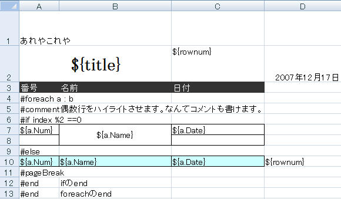
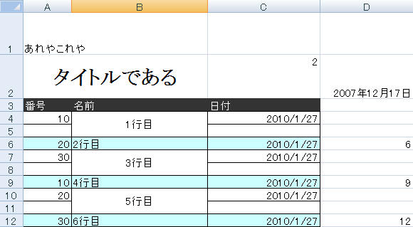

Welcome
Fisshplate.NETについて
Fisshplate.NETは、Excelにテンプレート式を書くことで動的にデータが埋め込まれたExcelファイルを生成することが出来るライブラリです。
.NET Framework2.0以上で動作します
Javaで作成されたFisshplateをベースに.NETに移植したものです。
Excel出力にはCOMを利用しておりません。 この為、Excelのプロセスの解放忘れといった問題が発生しません。
出力されるExcelのバージョンは「xls(97-2003)」形式となります。「xlsx(2007)」形式には対応しておりません。
S2Fisshplate.NETについて
S2Fisshplate.NETは、Fisshplate.NETの機能をS2Container(Quill)と連携させることで、より簡単に利用することが出来るライブラリです。
S2Container(Quill)は、.NET Framework上で動作するAOP(Aspect Oriented Programming)をサポートしたDI(Dependency Injection)コンテナです。 詳細はS2Container.NETを参照してください。
S2Container(Quill)との連携についての詳細は、Quillとの連携ページを参照してください。
最新版ダウンロード
2010/10/15現在の最新版はFisshplate.NET-0.1.1です。
概要
以下のようにExcelでテンプレートを作成します。
作成したテンプレートファイルを読み込み、NPOIのHSSFWorkbookを生成・保存します。
// テンプレート出力で利用するデータクラス
public class A
{
public String Name { get; set; }
pulibc int Num { get; set; }
public DateTime Date { get; set; }
}
// "FPTemplate.xls" を読み込んで "out.xls" を出力するサンプル。
// データ作成
IDictionary<string, object> data = new IDictionary<string, object>();
data["title"] = "タイトルである";
IList<A> aList = new List<A>()
{
new A() { Name = "1行目", Num = 10, Date = DateTime.Now },
new A() { Name = "2行目", Num = 20, Date = DateTime.Now },
new A() { Name = "3行目", Num = 30, Date = DateTime.Now },
new A() { Name = "4行目", Num = 10, Date = DateTime.Now },
new A() { Name = "5行目", Num = 20, Date = DateTime.Now },
new A() { Name = "6行目", Num = 30, Date = DateTime.Now },
};
data["b"] = aList;
HSSFWorkbook wb = null;
FPTemplate template = new FPTemplate();
using (Stream s = new FileStream("FPTemplate.xls", FileMode.Open, FileAccess.Read))
{
wb = template.Process(s, data);
}
using (Stream fos = new FileOutputStream("out.xls"))
{
wb.Write(fos);
}
out.xlsファイルには設定したデータが埋め込まれて出力されます。
繰り返し、条件分岐などを反映したExcelを出力することが出来ます。 テンプレートに設定した背景色、セルの結合、フォントなどの書式も反映されます。
Java版との違い
ほとんどの機能はJava版と同じように利用出来ますが、バインド変数などの解決方法や依存ライブラリの関係で以下のような差異があります。
- プレビュー機能が未実装です。(将来的には対応する予定です)
- 式言語にJSciprt.NETを利用。
- Mapの代わりにIDictionary。
- プロパティやメソッド名の先頭が大文字。